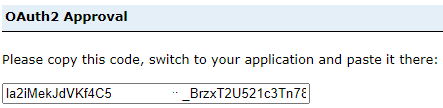

Leveraging GAE from within AAW or CAE;
Cross-Platform Analysis
What is AAW?
The Advanced Analytics Workspace (AAW) provides emerging state-of-the-art open source analytics and artificial intelligence tools, and compute capacity for modern data science workloads.
AAW has a focus on Open Source products and services.
What is CAE
The Collaborative analytics Environment (CAE) provides cloud services for data ingestion, transformation and preparation, as well as data exploration and computation. It includes tools for collaborative analytics, machine learning environments, and data visualization capabilities.
CAE has a focus on Azure Cloud Native products.
Prerequisites
1) An onboarded project in both spaces (AAW and/or CAE, AND, GAE)
2) An ArcGIS Portal Client Id (API Key)
Connecting to Spatial Data - GAE Enterprise Portal
The ArcGIS Enterprise Portal can be accessed in either the AAW or CAE using the API, from any service which leverages the Python programming language.
For example, in AAW and the use of Jupyter Notebooks within the space, or in CAE the use of Databricks, DataFactory, etc.
Connecting to GAE Portal using ArcGIS API
-
Install packages:
or using Artifactory
-
Import the necessary libraries that you will need in the Notebook.
-
Access the Portal Your project group will be provided with a Client ID upon onboarding. Paste the Client ID inbetween the quoatations
client_id='######'. -
- The output will redirect you to a login Portal.
- Use the StatCan Azure Login option, and your Cloud ID
- After successful login, you will receive a code to sign in using SAML.
- Paste this code into the output.

Search for your Content
search() method The search() method is used to retrieve a collection of items that match specific search criteria. It allows you to search for items based on various parameters such as keywords, item types, owners, tags, groups, and more. The search() method returns a list of items that match the specified search criteria. This method is useful when you want to retrieve multiple items that meet certain conditions.
There are multiple ways to search for content depending on the amount of metadata you have filled out for your item. Learn more about .search method here
Search all of your items in the Portal
Search content by name
Search content by tag
Search content by group
# Specify the group ID or group name you want to search within
group_id = "your_group_id_or_name"
# Search for items within the specified group
search_results = gis.content.search(query="", inGroup=group_id)
# Iterate over the search results
for item in search_results:
print(f"Title: {item.title}, ID: {item.id}")
Get Content (fetch/retrieve)
get() method
The get() method is used to retrieve a specific item by its unique item ID. You provide the item ID as an argument to the get() method, and it returns the item with that particular ID. This method is useful when you already know the exact item ID and want to retrieve that specific item.
The efficent way to retrieve content is by using the items ID:
It is also possible to .get the content from a list created during searching (like above), however, this can become convoluted when conducting multiple searches, just be careful with your syntax.
Working with Spatial Data
The choice between ArcGIS and open-source tools for spatial data depends on your specific needs and available resources. ArcGIS offers specialized functionality and support, while open-source tools are free and customizable. Consider your requirements and available expertise to make an informed decision. In some cases, a hybrid approach may be suitable, where you can leverage the strengths of both ArcGIS and open-source tools depending on the task at hand.
Convert Feature Service to Spatially Enabled DataFrame (open source)
Conversion of an ArcGIS feature layer into a Pandas DataFrame with spatial capabilities using the pd.DataFrame.spatial.from_layer() method.
Convert Feature Service to GeoDataFrame (open source)
Conversion of an ArcGIS feature layer into a Pandas DataFrame with spatial capabilities using the pd.DataFrame.spatial.from_layer() method.
import geopandas as gpd
# Assuming you have the item ID of the feature service
item_id = "your_item_id"
# Get the feature service item
item = gis.content.get(item_id)
# Access the feature layer within the feature service
feature_layer = item.layers[0]
# Query the feature layer to retrieve all features
features = feature_layer.query().features
# Convert the features to a GeoDataFrame
gdf = gpd.GeoDataFrame.from_features(features)
Publish a Spatial DataFrame as a Feature Service to GAE Portal
#sdf = your spatial dataframe
item_properties = {'title': '<title name>', 'tags': '<tag>', 'description': '<this is my item description>'}
published_item = gis.content.import_data(sdf, item_properties=item_properties)
published_item.publish()
# Retrieve the item ID and URL of the published feature service
item_id = published_item.id
feature_service_url = published_item.url
# Print the item ID and URL
print("Item ID:", item_id)
print("Feature Service URL:", feature_service_url)
Visualize Your Data on an Interactive Map
To visualize the map widget within different python based tools, you may need to leverage tool-specific display functions and or widgets. For example, in Databricks use the %python magic command to switch to Python mode before creating and displaying the map widget.
ArcGIS Map Module
from IPython.display import display
# Retrieve the feature service item
item = gis.content.get("feature_service_item_id")
# Create a map widget
map_widget = MapView()
# Add the feature service layer to the map
map_widget.add_layer(item.layers[0])
# Display the map widget using Databricks-specific display function
display(map_widget)
MatplotLib Library
ipyleaflet Library
from ipyleaflet import Map, GeoData
# Assuming you have a GeoDataFrame called 'gdf'
# Create a map
m = Map(center=(gdf.geometry.centroid.y.mean(), gdf.geometry.centroid.x.mean()), zoom=10)
# Create a GeoData layer from the GeoDataFrame
geo_data = GeoData(geo_dataframe=gdf)
# Add the GeoData layer to the map
m.add_layer(geo_data)
# Display the map
m
Learn More about the ArcGIS API for Python: Full documentation for the ArGIS API
Learn More about DAS AAW: AAW Help Guide
Learn More about DAS CAE: CAE Help Guide